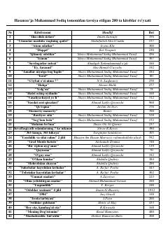

TEHasanxo'ja Muhammad Sodiq tomonidan tavsiya etilgan sara kitoblar ro'yxati.
Ushbu qo'llanmada Hasanxo'ja Muhammad Sodiq tomonidan mutolaa qilish uchun tavsiya etilgan 200 ta sara kitoblar ro'yxati keltirilgan. Ro'yxatdan diniy, badiiy, ilmiy va psixologik adabiyotlar o'rin olgan bo'lib, kitobxonlarga keng qamrovli adabiyotlar olamidan yo'llanma beradi.